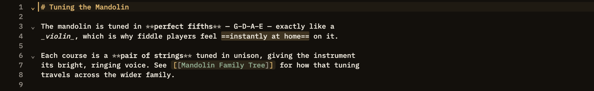

Docs/Editor/The writing surface
The writing surface
The editor styles your writing as you type. Headings, emphasis, links, and more come to life right where you wrote them — you never have to switch to a preview to see how your note is shaping up. This page is about the editing pane itself. For how it sits alongside Preview and Side by side, see View modes.
Your writing, styled as you type
As soon as the editor recognizes a piece of markup, it styles it in place. A heading turns bold and colored the moment you start the line with #. Bold and italic text takes on real weight and slant as soon as you close it. Links become clickable, and highlights get a tinted background — all while you keep typing.
The one thing the editor never does is hide what you typed. The #, **, ==, and [[ ]] markers stay right where you put them, styled along with the text rather than vanishing when your cursor moves away. You always see exactly what's in your note, just dressed up — so nothing is ever a surprise when you look at it again later.
#. The # markers stay visible.**bold**, _italic_, and ~~struck~~ take on real weight, slant, or a line-through the moment you close them — the markers stay on screen, just styled along with the text.==text== picks up a tinted background as you type it.
The editor takes on whatever theme you choose. Switch themes and your writing re-colors instantly, right along with the rest of the app.